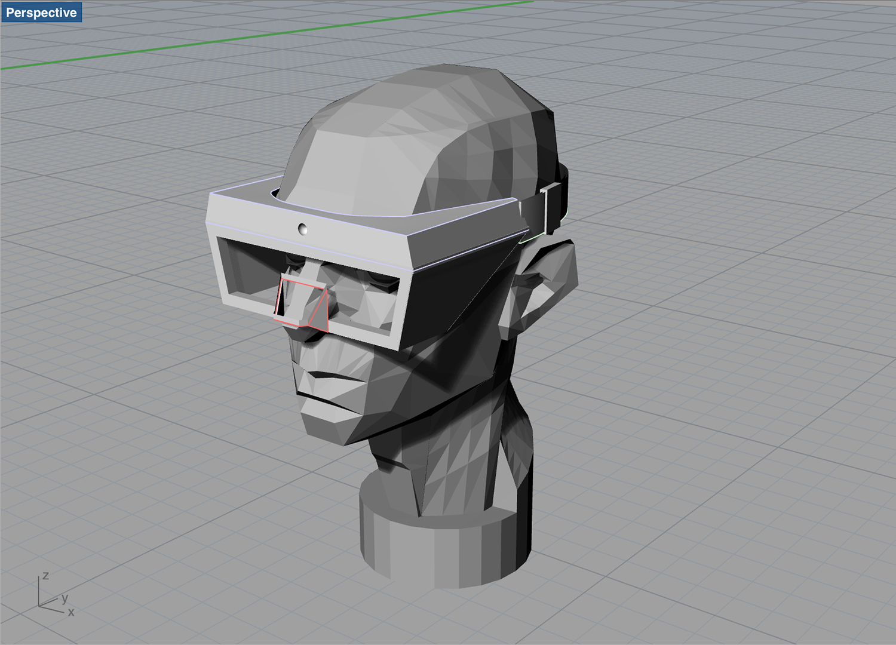
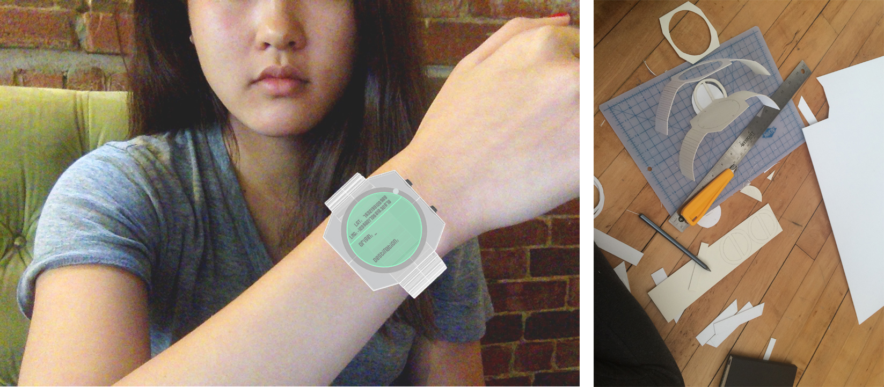
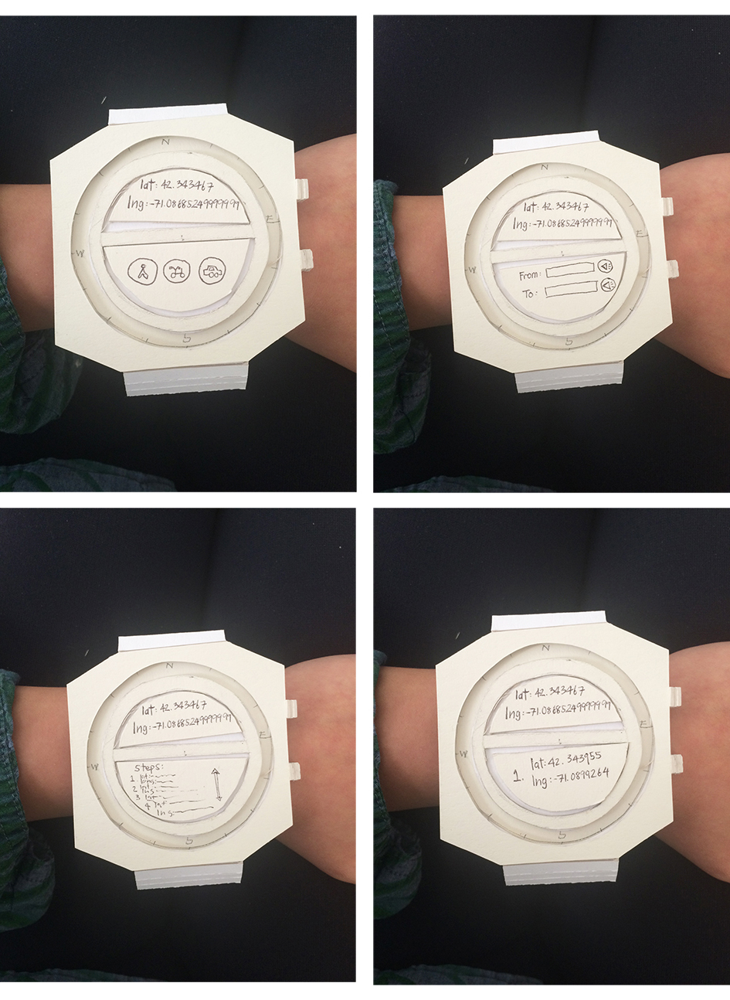
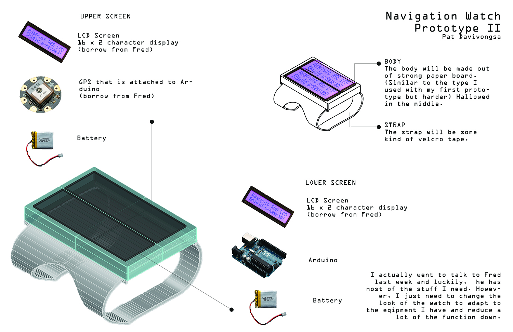
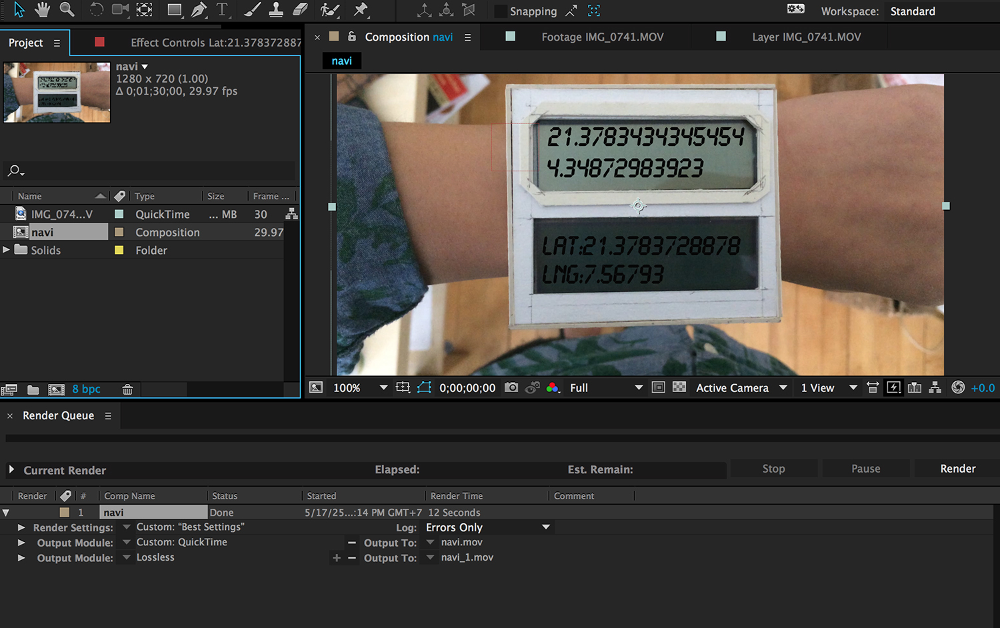

A project responding to social and cultural topic of the use of GPS. The wearable displays the user destination in very precise confusing string of latitude and longitude numbers, intending the user to get lost instead of reaching their destination.
☻ ☻ ☻
This is one of the case study project I did for my master's degree thesis. The case study was built as a part of the Useless Machine project in Design Symposium class.
The prompt of the project was that we needed to build a machine needed to..
My interest was in the topic of spacial experience. I chose an API that millions of people rely on everyday, the Google Maps API.
My concern was how people have been very dependent of this technology that their navigation skills are decreasing. They also became more careless of the spaces around them. I wanted to build a navigation machine that helps people navigate, yet still leaves rooms for them to be attentive of their surroundings.

The initial idea of navigation goggles
I went with the idea of a wearable device since it is something that people have a lot of trust for to take care of their lives. Ex: Nike fuel to track their active activities, or Jawbone to track their sleep patterns. Data from these devices is gold. The more information, the better.
These wearable devices give very detailed data of everything that goes on in our bodies. I wondered if these accuracies really necessary?
I decided to build a wearable navigation device that gave super accurate location information in latitude and longitude numbers. The point of this was to actually get people lost instead of reaching their destinations.


The first prototype
I used the paper prototype to explain the concept to the class. I let some people wear it and walked around, pretending that it was working. Even though the numbers on the screen didn't move, they could imagine how difficult it would actually be to understand those overly accurate latitude and longitude strings.
For the second prototype, I planned to build a navigation watch that actually functioned. This was, however, not required.

Second prototype with real elements
Unfortunately, I couldn't get the watch to work by the end of the semester. I made an abstract video instead to get my message across.

Making the abstract video on After Effects
Again, the aim of the watch is not to get the users to their destinations, but instead to not get them there. With the unnecessary and exaggerated degree of accuracy, the watch aims to confuse the users and to get them lost. Hopefully, the users would get to explore their surrounding more as they try to find their ways out of the area.
Read more about this project in my thesis book [PDF Download] :)
- - - - - - - - - - - - - - - - - - - - - - -